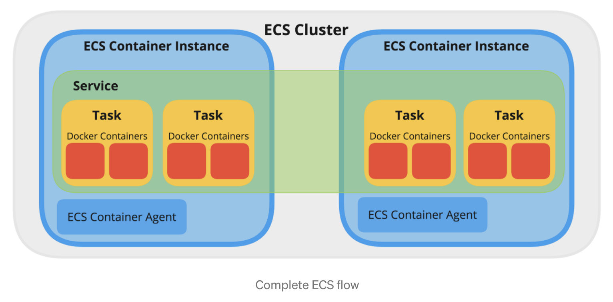
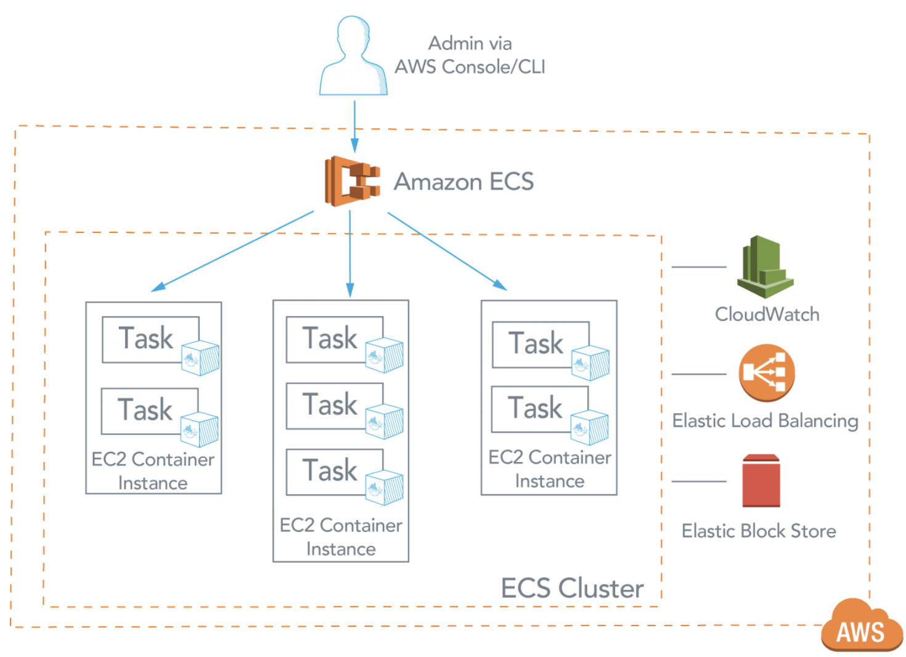
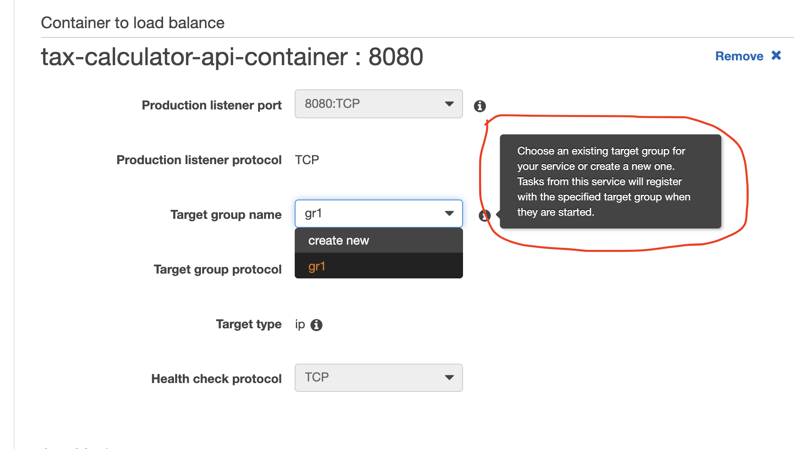
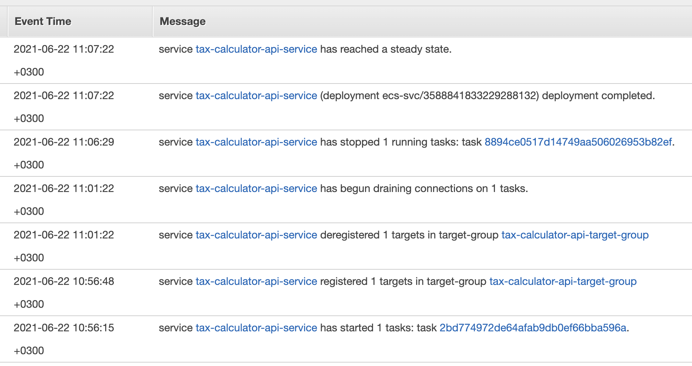

Amazon ECR, ECS (EC2/Fargate)
WHAT IS ECR?
WHAT IS ECS?
Deploying instruction
Network infrastructure configuration
Configuring ECS + ECR entities
Configuring GitHub actions
Load balancer configuration
Amazon ECR, ECS (EC2/Fargate)
WHAT IS ECR?
ECR is an acronym for the “Elastic container registry”. In simple terms, it is the so-called “AMAZON DOCKER HUB” of your containers!
You can push all your local containers images from your LOCAL to ECR, ECR is the home for all your pushed container images where later it can be used by ECS service to get deployed on AMAZON platform.
WHAT IS ECS?
Amazon ECS is a container orchestration service used to provision and manage container clusters. It allows you to quickly deploy and scale containerized workloads without having to configure, manage, and scale your own container management tool.
ECS is an acronym for “EC2 container service”. In simple terms, it provides a way to deploy your Docker containers over the Amazon platform on an EC2 instance or serverless(FARGATE)! ECS helps you orchestrate your containers.
So if you have any containers running on your local machine but you want to make it live on a public platform to get publically accessible, AWS ECS is the solution for that along with “ECR” and “Task definitions” and “services”.

ECS supports two launch types: EC2, and Fargate. Container clusters can be configured using either one, or a mixture of the two, with a variety of pricing options for both launch types.
- With the EC2 launch type, clusters are constructed as a fleet of Amazon Elastic Compute Cloud (EC2) instances. This provides greater control over the customization of your environment. However, while you can benefit from being able to configure your infrastructure to meet your needs (such as choosing network optimized or GPU optimized instances), you are also responsible for upkeep, including patching, instance type selection, networking, and environment security of your instances.
- With the Fargate launch type, you can concentrate on developing and maintaining your containerized applications, with the underlying servers abstracted. Fargate removes the need to provision and manage servers. Instead, you simply specify the resources per task, which also improves security through application isolation by design. ECS then communicates with Fargate to launch, run, and manage the containers on your behalf.
Each task that runs in Fargate comes with a dedicated Elastic Network Interface (ENI) with a private IP address. All containers of the same task can communicate with each other via localhost. Inbound and outbound task communication goes through the ENI. A public IP address can be enabled as well.
ECS cluster is a regional grouping of one or more container instances on which you can run task requests.When an instance launches, the ECS-agent software on the server registers the instance to an ECS Cluster. You can choose an existing VPC, or create a new one to spin up your container instances.
ECS is basically a logical grouping of EC2 machines/instances. Technically speaking ECS is a mere configuration for an efficient use and management of your EC2 instance(s) resources i.e. storage, memory, CPU, etc.
To sum up, ECS is just about clustering of EC2 instances, and uses Docker to instantiate containers/instances/virtual machines on these (EC2) hosts.

TASK DEFINITION: It is the complete definition of your tasks(in simple terms, your containers) and to describe how containers should be provisioned. Here You need to provide a link to ECR’s saved container images, CPU units, Memory, Container ports to expose, network type and many more. Simple terms, you are defining your containers and how to launch them via Task definitions.
TASKS: It is nothing but “ A RUNNING CONTAINER “. The description you provided for your containers in TASK DEFINITION, TASKS are the result of that. It can be thought of as a “RUNNING INSTANCE” of a Task Definition.
ECS SERVICE allows you to run your container instances as defined in your task definition. It also allows you to run and maintain a specified number of instances by configuring the auto-scaling policies. If any of your tasks fail or stop for any reason, the Amazon ECS service scheduler launches another instance of your task definition to replace it and maintain the desired count of tasks. You can optionally run your service behind a load balancer, The load balancer distributes traffic across the tasks that are associated with the service.
CONTAINER INSTANCE: This is nothing but an EC2 instance that is part of an ECS Cluster and has docker and the ECS-agent running on it.
So to summarize everything:
- Create a docker image for your application, get ECR login on your local machine and push your image to your ECR.
- Create an ECS cluster using desired no. of EC2 instances (if you are using EC2+Networking type) or if you are using the FARGATE option, this will be serverless. You can create this cluster in default or a custom VPC.
- Create a new task definition and describe everything about your container. Including the network type, ECR’s saved image path that you pushed from your local to Amazon ECR. Provide memory, CPU units and expose ports.
- Create a new service and choose your task definition to spin up TASKS from. Create a load balancer and configure it, depending upon the needs. Choose autoscaling policies and the desired number of instances.
- You are done with your part now just wait for your tasks/containers to come UP and you can access it via the load balancer and the port you defined!
Deploying instruction
Overall the process of deploying a service and making it externally available can be split into three sections which are described below.
Network infrastructure configuration
- Create (or make sure it exists) VPC - Virtual Private Cloud (which is basically a local subnet with a range of IP addresses)
- Create subnets needed within the created VPC. Main parameters: availability zone (us-east-2a, us-west-2a etc), route table.
- Create (or make sure it exists) Internet Gateway entity.
- Create a route table containing rules for traffic routing. Example:
10.0.0.0/16 local
0.0.0.0/0 igw-00cfdeac1a5dc71ef <<< this is a link to the Internet Gateway
- Create a VPC Security Group with inbound/outbound rules allowing services within your VPC to make and receive requests to/from the Internet. Example:
Inbound rule:
Type Custom TCP
Protocol TCP
Port range 8080
Source 0.0.0.0/0 <<< Accept all TCP traffic to port 8080 from the Internet Gateway
Outbound rule:
Type All traffic
Protocol All
Port range All
Destination 0.0.0.0/0 <<< which will route your traffic to Internet Gateway
Configuring ECS + ECR entities
- Create ECR (Elastic Container Registry) for storing docker containers. (One repository per one docker image)
- Create Elastic IP entity (which is basically a static IP address that is going to be used as entry point for Load Balancer configuration)
- Create an empty target group which is going to be used as a destination for routing requests by Load Balancer (Optional. It can be created automatically while creating Load Balancer entity)
- Create a Load Balancer, choose a subnet the requests are going to be routed to, choose the elastic IP entity, choose the target group.
- Create ECS Cluster (type: Networking only)
- Create ECS Task Definition (type: Fargate, task role: None, network mode: awsvpc, task execution role: ecsTaskExecutionRole). Add a container to a task, configure CPU/memory resources allocation.
- Create ECS Service (launch type: Fargate, choose your task definition, choose your VPC, subnet, security group). Load balancing -> Load balancing type: Network Load Balancer, Container to load balance -> add container to load balance. IMPORTANT NOTICE: choose the target group so every time the service executes it registers the allocated container private IP address in this target group, so the load balancer gets to route traffic to newly created containers.
- Create an individual IAM user with an access key for use in GitHub Actions workflows, preferably one per repository. Do not use the AWS account root user access key. Grant least privilege to the credentials used in GitHub Actions workflows. Grant only the permissions required to perform the actions in your GitHub Actions workflows. (Go to documentation of every Github action used in the workflow, see “Permissions” section. Example: https://github.com/aws-actions/configure-aws-credentials )
Configuring GitHub actions
- Create a project Dockerfile in the root of Github repository
- Go to repository settings and save AWS_ACCESS_KEY_ID, AWS_SECRET_ACCESS_KEY credentials of the created IAM user.
- Create a task-definition.json in the root of Github repository, fill it with Task Definition json
- Create GitHub action “Deploy to Amazon ECS”, replace aws.yml placeholders with values obtained from ECS/ECR configuration process.
- Add steps for building gradle/maven project to aws.yml
- Go to a repository “Releases” section, draft a new release, create version tag, publish release. This will initiate the “Deploy to Amazon ECS” workflow which will build a docker container, assign it a unique tag, and push it to Amazon ECR. After that, it will render a task definition stored in your repo, with a newly created container name, login to Amazon ECS and upload the new task definition. This action will deploy the new version of your service to the Amazon ECS Cluster.
Load balancer configuration
Load balancer configuration requires to specify a target group - list of IP addresses the requests are routed to.
Problem: every time the container starts, it is assigned a new private IP within the subnet ip range. How do we automatically register the assigned IP in the target group?
Answer:
- First of all we need to create a target group (with no content)
- While creating a service, configure a “Container to load balance” section so the selected container is mapped to the created target group

